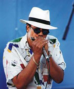

Billy Branch - один из наиболее молодых классиков блюза, продолжатель традиций James Cotton, Junior Wells - харперов-классиков, для которых свойственно современное звучание.
Официальный сайт: www.billybranch.com
William Earl Branch родился в штате Иллинойс в 1951 году, но рос в Калифорнии и как это не удивительно, не перенял West Coast звучание, характерное для тех краев. В 1969 году переезжает в Чикаго, чтобы учиться в университете(!). Впитывая музыку харперов, пользовавшихся тогда наибольшей репутацией: Carey Bell, Big Walter Horton, Junior Wells. Кстати, место одного из них он в последствии и занял - легендарный Carey Bell уступил ему свое место в Willie Dixon All-Stars. В семидесятых образует Sons Of Blues - квартет, состоящий из блюзовых музыкантов его поколения (наиболее известные): Lurrie Bell (гитара) - сын Carey Bell'a, Freddie Dixon (бас) - фамилия и выбор инструмента говорят за все.

В конце семидесятых оставляет SOB, чтобы начать карьеру сессионного и студийного музыканта (он играет со всеми от Pinetop Perkins'a до Johnny Winter'a).
В 1990 выходит знаменитый альбом “Harp Attack!”, где Billy Branch - “New Kid in the Block” встречается со всеми теми, благодаря музыке, которых он вырос как музыкант - James Cotton, Junior Wells, Carey Bell.
Советую прослушать диск 1999 года “Satisfy me” - Билли показывает все, на что способен, играя то классику чикагского блюза, то регги, то современный вариант блюза.
Диск 2004 года “Double Take” в дуэте с Kenny Neal - интересен своим традиционным подходом к аранжировкам, мастерским исполнением.
Константин Колесниченко [aka Wheel]
bluesharp.inkharkov.com